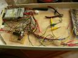
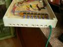
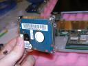
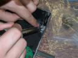

We have finally built enough pieces of the clock together to get some digits!
It basically comes down to a white wooden box, a piece of cardboard with the LEDs wired, running to a RJ45 jack. Then a stryofoam cutout painted black, with a white piece of paper and plexyglass on top for a face.
Here is the template with wired LEDS:
A multitude of completed digits (still missing the blank faceplate).
Painting the boxes:
This is an experiment with reflective tape: (didn’t make a difference)
And yet even more boxes are coming:
Here is the magic controller: (A little messy, not finished)

And the outputs of the controller: (Just cat5 connectors, cheap!)

This is a video that I made for some fourth graders in an attempt to explain what Wikipedia is, how it works, and why it is neat. We made a new article together, and they all went home with a piece of fiber optic to remind them of the event. This is the video I showed them for historical purposes:
Now hear me out, I used to be a hater. It seems that the more people blog, the more the internet is loaded up with wasted bandwidth and ad space. The truth is that blogging has a very small marginal cost, and usually blogging occupies time that would not otherwise be spent doing “productive” things.
But! What if all of humanity blogged, and then we could aggregate all blogs on the internet. Now, what if a mother of a special-needs child is having a hard time putting her child to sleep, so she blogs about it. Then the blogging software analyzes the blog and finds similar posts from other authors (Google plugin?) and she reads about the other experiences of other mothers. Can you see how the sum of human experiences, not just book knowledge (like Wikipedia) are tagged, sorted and searchable.
That is what I think blogging is all about, not hits. I don’t care how many people read my blog. None for all I care. Its the sum of all blogs that adds to our collective experience repository called the internet which is important.
Another way to think about it is like this: imagine a graph where number of reads is the Y axis and you lined up webpages on the X. Sort it and it would look something like this:
(From the Wikipedia Article)
So most people read the most popular websites. My blog, your blog, your moms blog, they are all in the yellow. Guess what? The sum of the yellow is more than the sum of the green! (Sometimes) That is the true power of the internet, is the capability of supporting an infrastructure for the tail end. How? You guessed it: blogs, wikis, and other user generated content. (I hate to say, web 2.0? ::shivers::)
We start with a template made at a sign shop, and the cover the edges with aluminum tape to protect them from the heat from the hot wire.
I’ve pushed out holes with a strait wire and a blow torch to give my entry points for my hot wires. Its going to be a plunge and cut job.
The laserpointer helps guide the hot wire because it inevitably bends and makes crooked cuts. Following the point makes straiter cuts. The laser isn’t cutting the stryofoam for us… Yet.
Only a CNC machine could have done a better job. A CNC machine…. With a laser cutter!!!
My laptop is a Sharp MM20, which I knew I was going to spraypaint eventually, I just needed a reason to. After about a year of wear and scratches from abuse, it was time.
I’m replacing the harddrive in my laptop with a 4GB flash card.
It should be faster:
/dev/sdb:
Timing cached reads: 3532 MB in 2.00 seconds = 1766.79 MB/sec
Timing buffered disk reads: 58 MB in 3.10 seconds = 18.69 MB/sec
root@kyle-desktop:~# hdparm -tT /dev/sda
/dev/sda:
Timing cached reads: 3532 MB in 2.00 seconds = 1766.13 MB/sec
Timing buffered disk reads: 78 MB in 3.04 seconds = 25.67 MB/sec
Pros: Faster seeks and sustained I/O. Lifetime Warranty.
Cons: Expensive. 25% Disk Space. Bad blocks over time.
So lets do it! I started with instructions from this guy.
First step, disassembling the laptop:

You can see that this is not a normal size laptop hard drive. This is a 1.8” drive. So I bought this card and a cheap laptop IDE to flash converter off of ebay. (Sorry I don’t have a picture.)
We used containers with numbers and a legend to keep track of small screws and parts. When we were done, these were left over:
(Don’t ask me whats in compartment 8, I really don’t know what it goes to. But there is the leftover drive and screws)
Second step, spray paint it! Oh, and don’t forget to put in the flash card when you put it back together.
Can you spot the laptop?
Of course, with only a 4GB drive, I will be running my favorite operating system of course, Ubuntu!
Want more? Click here to download every picture we took.
Closing thoughts:
I’m extremely impressed. The camo-finish is beautiful and feels great thanks to the clear coat. Nothing broke, and everything went back together correctly thanks to good documentation and pictures for reference. If you have any questions about what I did, post a comment and I’ll come back and answer them.
You can see how we have gutted an air-soft gun, and inserted our led’s and switches to turn it into a lasertag gun. All of our guns will be interchangeable as they will all have the same Cat-5 Pinout. Eventually we will have an array of guns and we can change their properties in software. (Reload times, shots per clip, damage per shot, etc..)
Karl and I have taken our backpacks and spraypainted them camo! And we have installed a few components for two test boxes. (Radio, Mainboard, and ISD)

You can see me wiring the usb port for the usb key thing. (It stores your personal stats)


 (From the Wikipedia
(From the Wikipedia 


{kind=link}
{kind=link}
{kind=link}
{kind=link}
{kind=link}
{kind=link}
{kind=link}
{kind=link}
{kind=link}
{kind=link}
{kind=link}